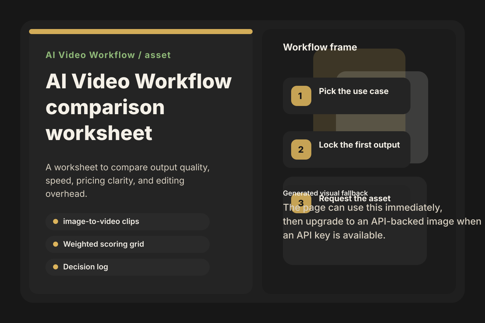

Start with ltx.studio, vidworkflow.com, aistudio.google.com or the closest equivalents already in your shortlist.
AI Video Workflow
AI Video Workflow comparison worksheet is ready
Download the asset, use the first module on one narrow pilot, and keep the workflow notes that make the second run cleaner than the first.

Start here in the first 30 minutes
Fill the pricing clarity, workflow friction, and hidden-cost columns before anyone ranks the options by feature hype alone.
Use the decision log to name the first choice, the fallback, and the exact reason the rest of the field lost.
What is inside
Score shortlist options on time-to-value, workflow friction, pricing clarity, review drag, and reuse potential with a visible weighting model.
Capture the first recommendation, the fallback, the reject reasons, and the exact trigger for revisiting the decision.
Track hidden costs, upgrade trigger, manual review drag, and which unknowns still need proof before signing off.
A worked example showing how one team narrows the field, rejects weak options, and justifies the first choice.
Why this asset should help
4 visible options including ltx.studio, vidworkflow.com, aistudio.google.com are already in play. The worksheet exists to cut that field down to one first choice and one fallback.
One of the clearest public anchors is still $20 for 3-12 min. The worksheet makes the buyer log hidden cost and review drag instead of trusting fuzzy plan names.
The scoring grid forces the buyer to compare workflow friction, upgrade triggers, and reuse potential, which is usually more useful than comparing raw feature lists.